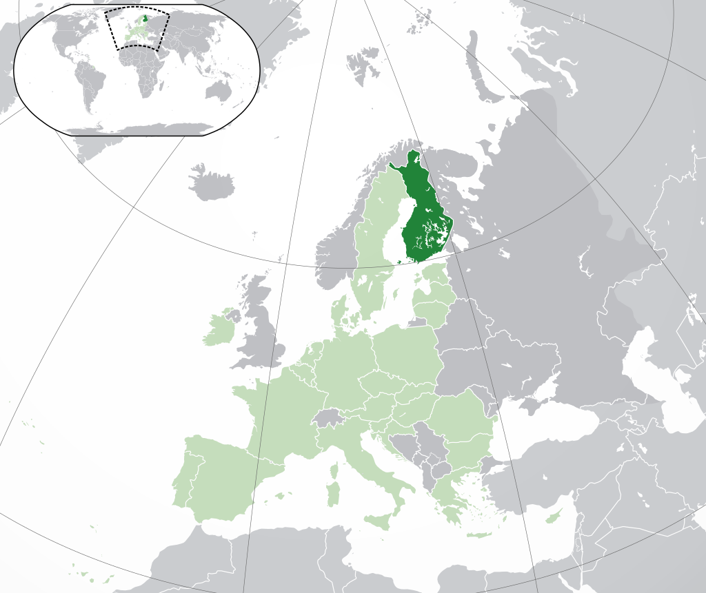

Finland, officially the Republic of Finland is a Nordic country in Northern Europe. It shares land borders with Sweden to the northwest, Norway to the north, and Russia to the east, with the Gulf of Bothnia to the west and the Gulf of Finland to the south, across from Estonia. Finland covers an area of 338,455 square kilometres (130,678 sq mi) with a population of 5.6 million. Helsinki is the capital and largest city. The vast majority of the population are ethnic Finns. Finnish and Swedish are the official languages, Swedish is the native language of 5.2% of the population. Finland's climate varies from humid continental in the south to the boreal in the north. The land cover is primarily a boreal forest biome, with more than 180,000 recorded lakes.
Finland was first inhabited around 9000 BC after the Last Glacial Period. The Stone Age introduced several different ceramic styles and cultures. The Bronze Age and Iron Age were characterized by contacts with other cultures in Fennoscandia and the Baltic region. From the late 13th century, Finland became a part of Sweden as a consequence of the Northern Crusades. In 1809, as a result of the Finnish War, Finland became part of the Russian Empire as the autonomous Grand Duchy of Finland, during which Finnish art flourished and the idea of independence began to take hold. In 1906, Finland became the first European state to grant universal suffrage, and the first in the world to give all adult citizens the right to run for public office. After the 1917 Russian Revolution, Finland declared independence from Russia. In 1918, the fledgling state was divided by the Finnish Civil War. During World War II, Finland fought the Soviet Union in the Winter War and the Continuation War, and Nazi Germany in the Lapland War. It subsequently lost parts of its territory, but maintained its independence.
Finland largely remained an agrarian country until the 1950s. After World War II, it rapidly industrialized and developed an advanced economy, while building an extensive welfare state based on the Nordic model; the country soon enjoyed widespread prosperity and a high per capita income. During the Cold War, Finland adopted an official policy of neutrality. Finland joined the European Union in 1995 and the Eurozone at its inception in 1999. Finland is a top performer in numerous metrics of national performance, including education, economic competitiveness, civil liberties, quality of life and human development. In 2015, Finland ranked first in the World Human Capital, topped the Press Freedom Index, and was the most stable country in the world during 2011–2016, according to the Fragile States Index; it is second in the Global Gender Gap Report, and has ranked first in every annual World Happiness Report since 2018.
 You can contact author at www.hamk.fi.